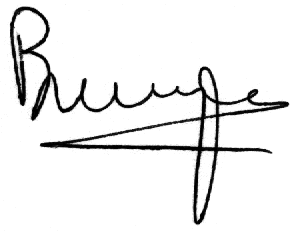

|
November 15, 1999
Dear Eiffel User:
Over the past few months, ISE has been busy talking to customers and integrating their suggestions into our latest products.
Today we are releasing the result of this effort: ISE Eiffel 4.5, a major new version integrating many exciting developments.
Moving to 4.5 is a smooth process, aided by the documentation available on the release CD, at
http://eiffel.com, and in the new ISE Eiffel Knowledge Base
at http://support.eiffel.com. There is no significant
incompatibility with the previous version, only greatly enhanced capabilities and new, powerful mechanisms.
4.5 is faster than ever before. We have increased C compilation speed by a factor of 5 to 10, depending on the C compiler.
Added to the spectacular Eiffel compilation optimizations of the past few releases, this may mean gaining weeks
in a large development. The generated code is also faster.
One of the highlights of 4.5 is a full-fledged set of tools for Microsoft COM. The new EiffelCOM enables you both to use
existing COM components (the client part) and to generate COM components from Eiffel systems (the server part).
The EiffelCOM wizards help you meander effortlessly through the intricacies of COM.
EiffelCOM supports the first implementation of Design by Contract (TM) for COM; for example assertion violations in
an Eiffel server will be passed on to clients (Eiffel nor not). This is particularly attractive for COM developers, since
until now COM applications have been notoriously hard to debug.
Component-based development has more than one approach, and we are happy to include in the Eiffel 4.5 CD a copy
of the MICO/E Eiffel-CORBA library developed by Robert Switzer from the University of Göttingen, a well-known Eiffel pioneer.
Currently MICO/E is available for Linux and Unix. In the coming months you may expect many developments on
MICO/E and other third-party additions to ISE Eiffel.
4.5 also enables you to benefit from all the recent additions to the Eiffel language: creation expressions, creation of
generic values, recursive generic constraints, tuples, and agents. It greatly simplifies the writing and
maintenance of Ace files. It gives you new facilities for interfacing with C and C++, with support for C structs
and C++ macros. It incorporates hundreds of bug fixes and enhancements. For more details see the release notes
here.
In the coming months you can expect many new additions to ISE Eiffel from the ISE team, tuned directly to your everyday
needs for developing high-quality applications quickly and efficiently. As always, we welcome your feedback and suggestions.
In the meantime, happy Eiffeling with ISE Eiffel 4.5!
Sincerely,
Interactive Software Engineering, Inc.

Bertrand Meyer
President
|